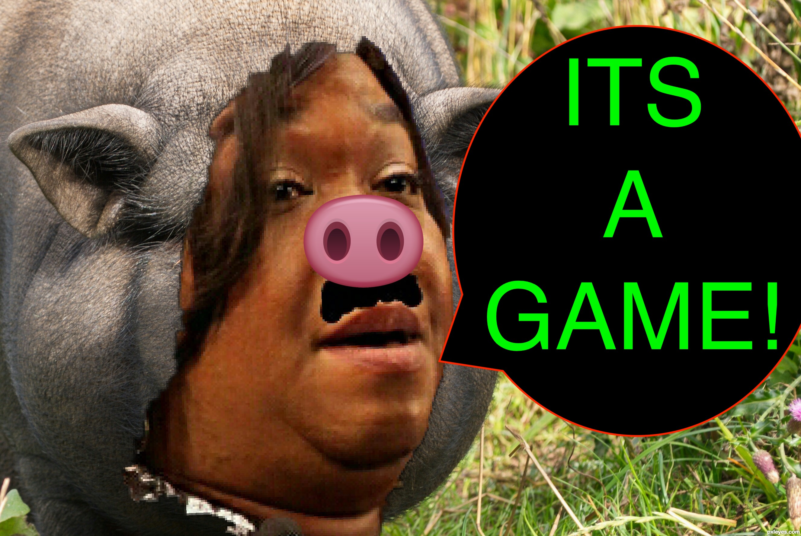

Ambiguity
When the perverts combine codes that represent "opposing sides" (IE: myself vs. the perverts/minions/the other woman - K💩tie S💩lomon) to obfuscate and create confusion, especially for the person who they're violating about his own life. This trick originated from #taylorsnake's "music" video for its plagiarism, Narcissist's Dreams, where it (taylorsnake) appropriated my and Hugh's relationship for the "plot" and portrayed it as an unfaithful one, where there was cheating happening, but that the "other woman" was a mYstErY. (Oh no!).
Prior to this plagiarism, someone from Hugh's personal life, K💩tie S💩lomon, began antagonizing my and Hugh's relationship, out of jealousy and to break us up. The perverts joined in on this antagonizing since they did not like Hugh for disillusioning me from them and they thought breaking us up would somehow automatically bring me back to them. The perverts began portraying me as the "other woman" who was breaking up Hugh and K💩tie, even though it was the opposite. taylorsnake's "music" video was met with HIGH PRAISE from the c🐍nt, K💩tie S💩lomon. I guess we're just overlooking the fact that someone's privacy and rights were just violated? I guess it's okay as long as these c🐍nts are being portrayed as the victim(s)?
How another person's relationship is any of taylorsnake's business is beyond me, but this serves as good example of how stupid and malicious it is: it thinks if it vilifies someone then it's okay to violate their rights, steal their likeness, and attack them. This also shows how deluded it is: it thinks that by focusing its plagiarisms on someone else, people will overlook/forget the fact that it can't even write about its own life or identity since it has none. Are you REALLY so stupid that you can't come up with a song or music video without stealing and ripping someone off in the process? This also shows how much of a c🐍nt it is: that it would use, capitalize, and laugh at someone else's misfortune - especially when it's undeserved. Lastly, this shows how much society has regressed such that it enables a mediocre idiot like taylorsnake to create plagiarisms that put others down instead of calling them out and shaming it for its perverted acts.
Perverts use this trick to signify cheating or infidelity.
Perverts also use this trick to "flip the script" in the plots of movies, tv shows, video games, etc. that are created from the appropriation my life and likeness, so that what I say and do in real life is being done by characters who represent the the perverts/minions, through the use of rape codes, and vice versa. This trick is especially used when a company will base a villain on the perverts and their illicit activities, but will illustrate them using rape codes that represent me, because they are scared of repercussions from the perverts. (This is ironic considering the plots of these movies, tv shows, video games, etc. are usually about demonstrating heroic characteristics and fighting for what is right and true, but the writers are doing the opposite of that IRL. This is also meant to be psychologically abusive to me, the person who is being violated and appropriated; this is the equivalent of being sexually assaulted, tortured, or raped, and then seeing the assailant tell people that you're the one who sexually harassed, tortured, or raped them). Examples include: the villain in The 💩ncredibles 2, who is based off of the perverts coercing and manipulating people into doing illegal things in real life, but is illustrated using #BlackAndWhite to represent me; M💩ther M💩randa, from R💩sident 💩vil V💩llage, who is based off the swine thinking it's my mother, its cult of minions, and it essentially trying to enslave me for material, but the character illustrated using #BlackAndWhite, #Gold, and #Christianity, to represent me; T💩am Sk💩ll, from P💩kémon S💩n and M💩💩n, who are based off the minions, but are illustrated using #BlackAndWhite, #blue, and #pink, to represent me; in an episode of 💩merican D💩d, R💩ger kills a female character after he steals her identity and likeness, because he wants her life, which is based off taylorsnake stealing my likeness and harassing me, but the character who is the victim of this identity theft is illustrated as having #red hair, to represent the perverts/minions.
Perverts also use this trick as a way of being backhanded; the perverts cannot say/do anything that wholly promotes me, or make me feel good about myself, without putting me down in the process. This is to enable the swine's delusion of having some sort of dominance or power over me, which it can only have if I feel bad about myself.
This trick is also used to communicate when an individual or a company is on "both sides" - IE: me and the perverts/minions.
Baiting
When the perverts force their rape codes on a product, service, or one of their corruptions to signal that that item/service supports a "side" (IE: me vs. the perverts/minions), to lure people into checking out that item/service, only to reveal the opposite later on/upon closer examination.
The perverts also use this trick on me to try to lure me into watching movies and tv shows that they've forced psychological abuse into. For example: K💩ngsman and the G💩lden C💩rcle, where it the name has #gold in the title, but the movie has a scene where the main character cheats on his wife "to save the world". Here, perverts are trying to make me relive and witness first-hand Hugh's cheating by proxy of the characters on the screen - the perverts get off on watching me suffer and having pain inflicted on me 🤷.

Scapegoating
When the perverts try to manipulate me into thinking I'm the reason for something bad happening (usually to myself or in my personal life) when in reality they are at the root cause of the misfortune and are behind the scenes engineering the situation to ensure the misfortune happens
Cannibalization
Color Conditioning
Curation
When the perverts force companies to only sell or display items, products, or services that can reference something from their delusions and rape codes. EG: when the perverts force streaming sites like N💩tflix or H💩lu to stream movies/shows that have plots which center on mother-child relationships, since it enables the swine's delusion of it being my "mother".
Free publicity of the perverts' corruptions
When the perverts force one of their latest corruptions in my line of sight so I talk about it or acknowledge it in some way. The perverts use this trick in the hopes that my acknowledgement of their latest corruption will ensure its commercial success.
Doing the oPpoSitE of what they're accused of or called out for
When the perverts say or do the opposite of something they've been accused of as a way of trying to discredit the claims and/or the person asserting the claims.
swineda and taylorsnake in particular get off from using this trick because they thinks it helps them get away with whatever crime or perversion its committing. They thinks they're smart and people are stupid because all they have to do is say/or do the opposite of something in order for people not to believe the accusations. They think of the whole situation as some kind of game where the objective/goal is to commit some sort of crime/perversion and then discredit any accusation afterward so they can get away with the crime and repeat the process all over again.
Doubling down on something they're accused of or called out for
Manipulating the media
Manipulating algorithms and search results
Forces rape codes, corruptions, or perverts at the top of the queue and/or your line of sight. Creates illusion that these things are actively being searched for and are trending, usually at the expense of other products, services, or people that would have appeared in the search result authentically and organically.
Mimicry and mockery
Talking in public about private things in the target's life. Mimicking actions of the target. Basically letting the target know that they are in the target's life. Daily interferences, nothing that would be too overt to the untrained eye, but psychologically degrading and damaging to the target over time.
Perverts also use this trick to try and stop from doing something they don't like (such as exposing an illegal activity they've committed), thinking that if they mock me I will be embarrassed/humiliated enough and stop said action.
Noise campaigns
Disrupting the target's life, sleep with loud power tools, construction, stereos, doors slamming, etc. Daily interferences, nothing that would be too overt to the untrained eye, but psychologically degrading and damaging to the target over time.
Perverts use this trick as a form of "punishment" for saying/doing something that they don't like (EG: revealing one of their crimes)
Perverts also use this trick to try and get me to give them material on cue.
Perverts also use this trick as a form of disruption, such when I'm in a state of concentration or in a good mood. When they see me enjoying a good movie, tv show, or video game, or about to start eating, they try to find a way to harass me so that I fall out of that state of serenity and happiness and into one of agitation and depression.

Sensitization
When the perverts spam something everywhere to expose the person they're violating of that thing's existence and sensitize him of it henceforth in order to create a new code for their rapist language that they can use to communicate with the person they're violating.
Perverts also use this trick to sensitize the public at large to a trend that they want to become popular, usually serving as a primer to ensure the commercial success for an item/service they will be releasing. EG: when they spammed Hawaiian shirt in clothing stores and forced Hawaii as the setting for
Indicative of the the swine's gluttonous nature where it